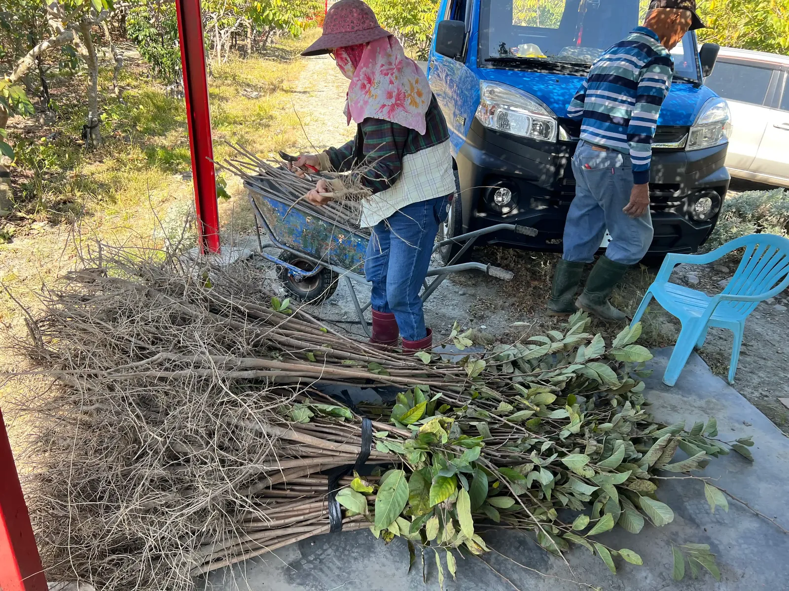
挑選健康強壯的果苗，確保果園的優良根基。
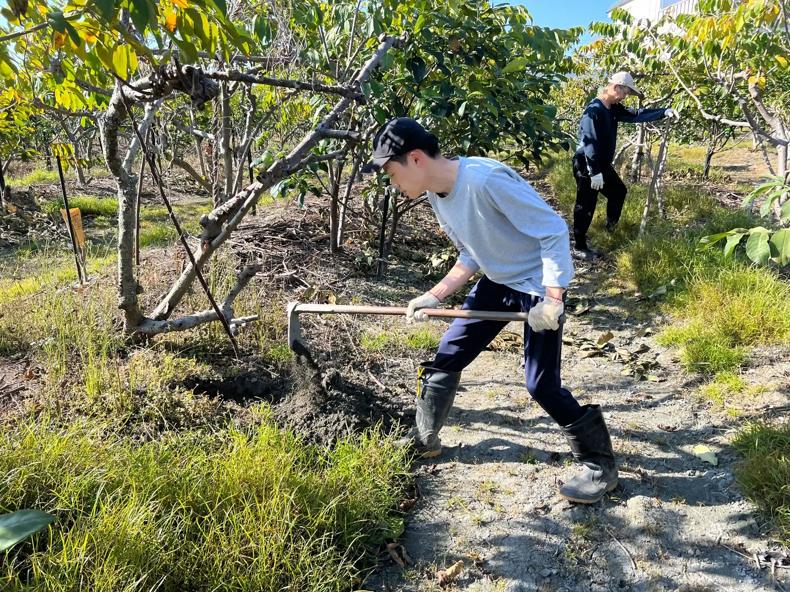
挑合適位置挖掘深度適當的植樹坑。
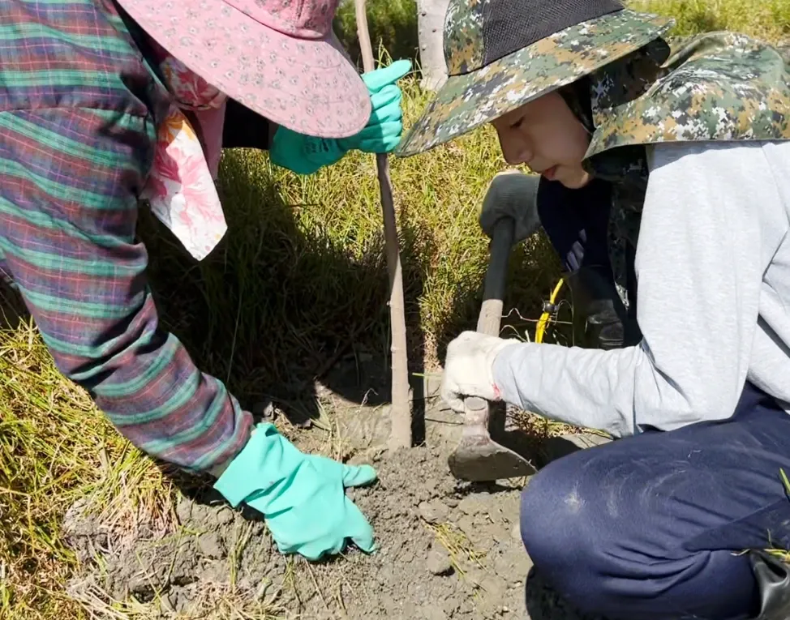
將樹苗端正放入坑中，覆土澆濕讓根系發育。
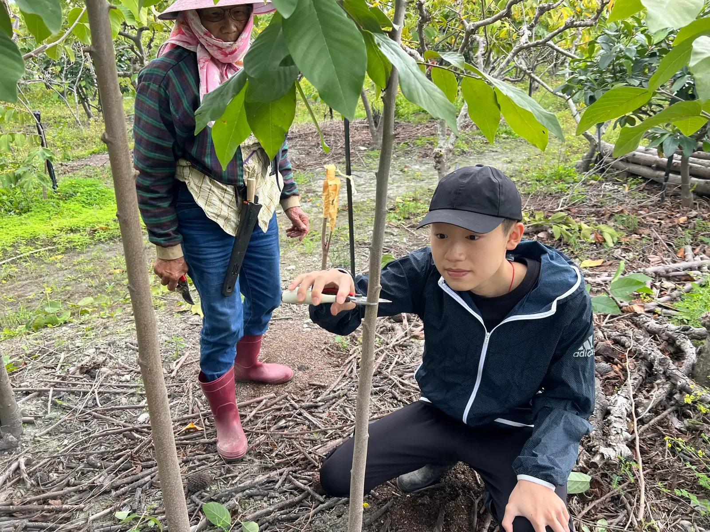
將多餘實生枝條剪除，準備作為嫁接砧木。
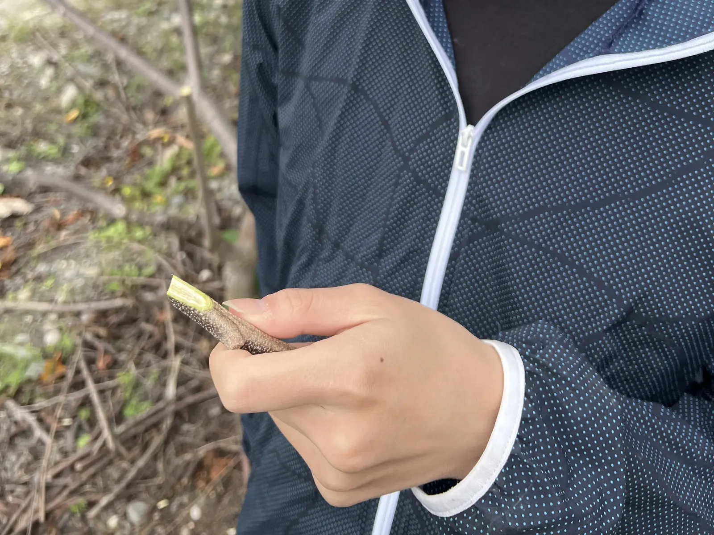
挑選芽眼飽滿的優良接穗。
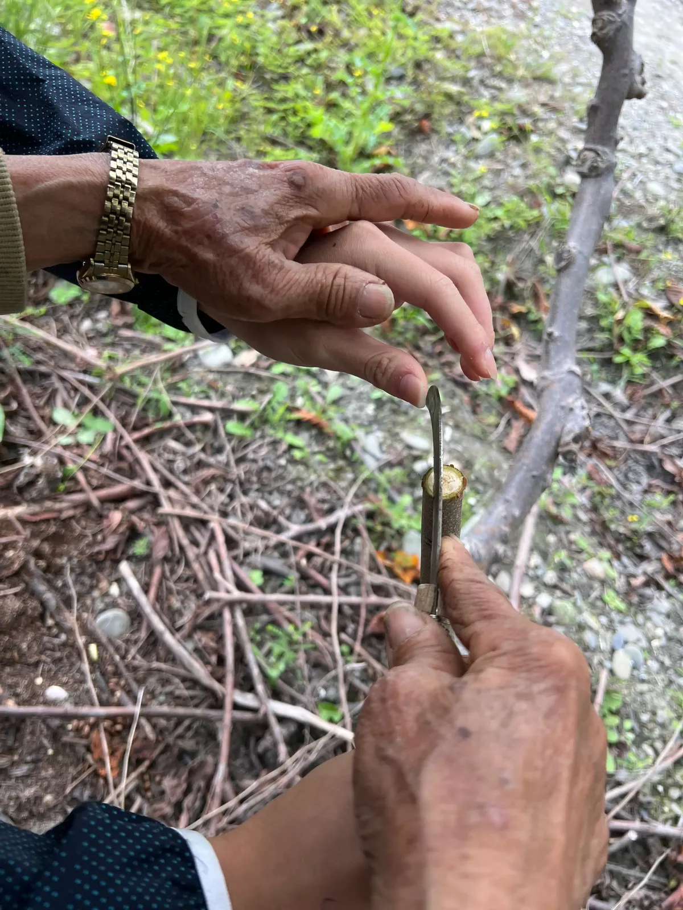
精準切開砧木與削好接穗，完美對齊形成層。
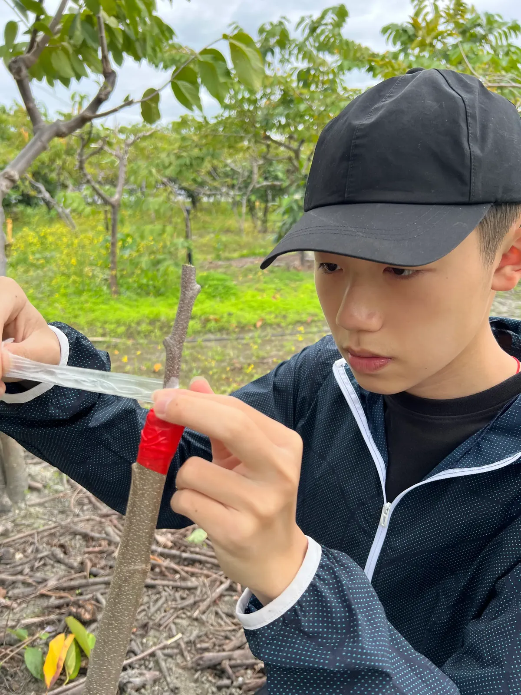
用膠帶緊密固定接穗，並纏繞石蠟膜以達到絕佳保濕效果。
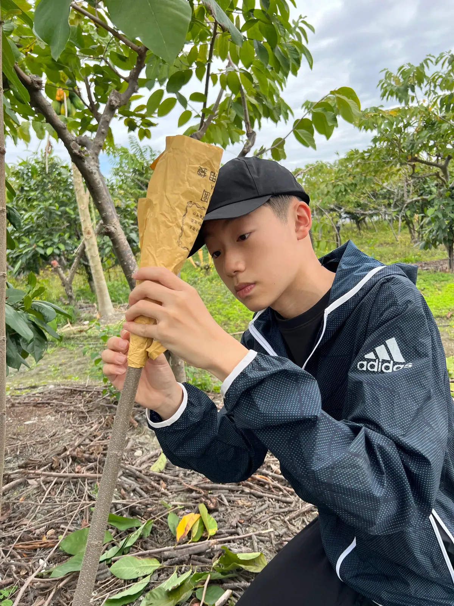
外部套上防護紙袋，防曬防蟲害，等待新芽萌發。
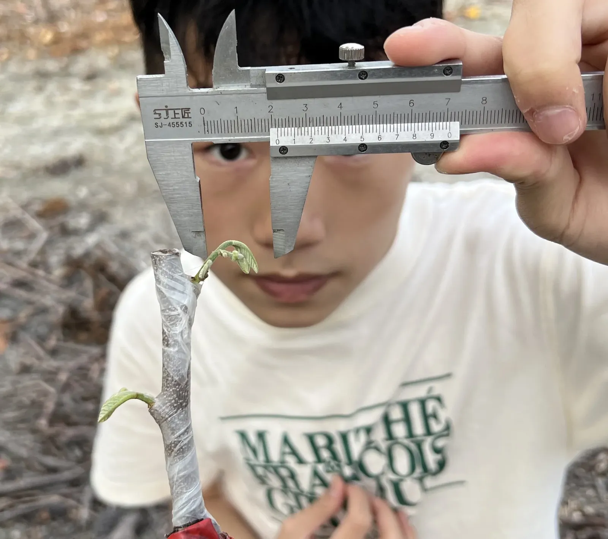
突破重圍，新芽萌發，測量長度約 2.3 公分。
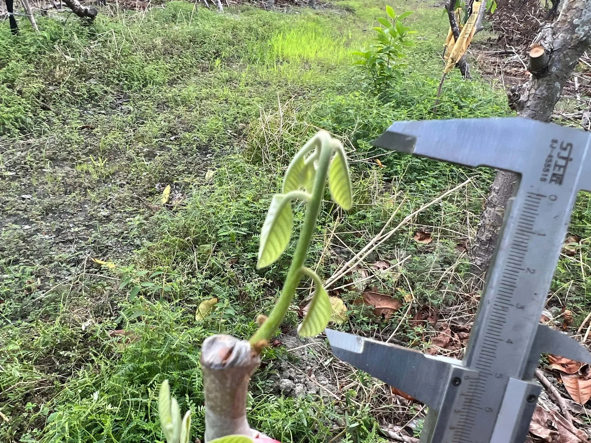
穩定抽長，展現生機，測量長度約 5 公分。
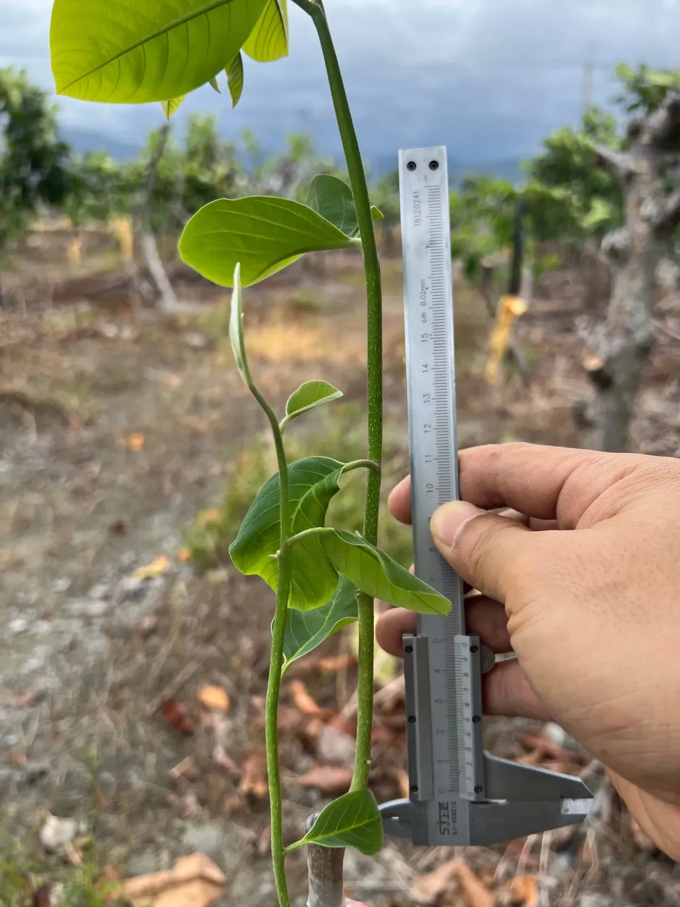
枝葉開始茂盛，生長迅速，測量長度超過 30 公分。